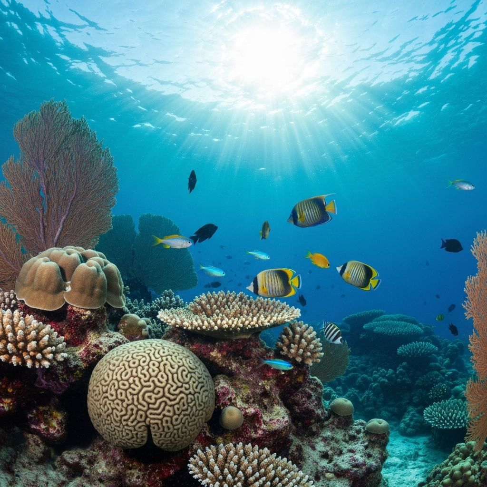
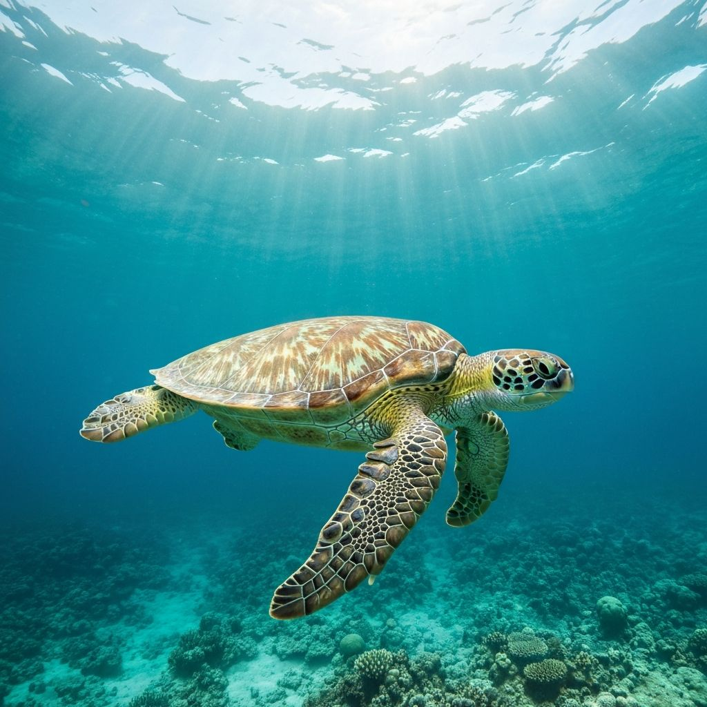
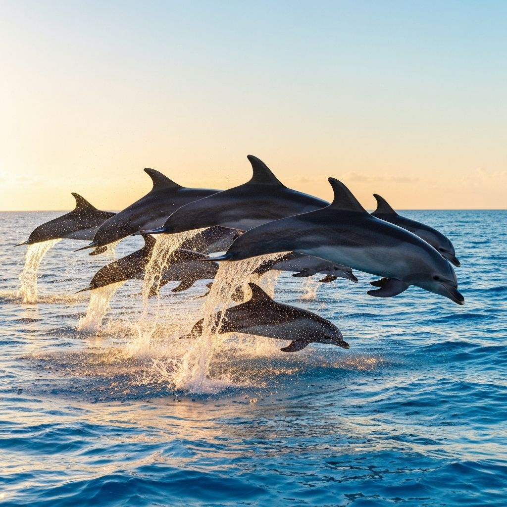

The Beauty of Coral Reefs

Coral reefs are some of the most diverse ecosystems on Earth. Often called the rainforests of the sea, they cover less than 1% of the ocean floor but support approximately 25% of all known marine species.
Why Coral Reefs Matter
- They provide habitat for thousands of marine species
- They protect coastlines from storms and erosion
- They support fishing and tourism industries worldwide
- They are a source of new medicines and scientific discoveries
Fascinating Sea Creatures
Sea Turtles

Sea turtles have roamed the oceans for over 100 million years, making them one of the oldest creatures on Earth. These gentle giants can travel thousands of miles during their migrations.
Dolphins

Dolphins are highly intelligent marine mammals known for their playful behavior and remarkable communication abilities. They use a sophisticated system of clicks and whistles to communicate with each other.
Amazing Ocean Facts
- The ocean produces over 50% of the world's oxygen
- More than 80% of the ocean remains unexplored
- The deepest part of the ocean is nearly 7 miles deep
Protecting Our Oceans
Our oceans face many threats including pollution, overfishing, and climate change. It's essential that we take action to protect these vital ecosystems for future generations.
How You Can Help
- Reduce your use of single-use plastics
- Support sustainable seafood choices
- Participate in beach cleanup events
- Learn more and spread awareness about ocean conservation
To learn more about ocean conservation efforts and how you can get involved, visit the Ocean Conservancy website.